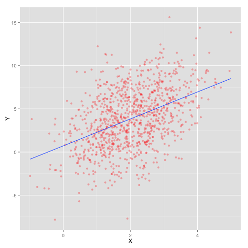
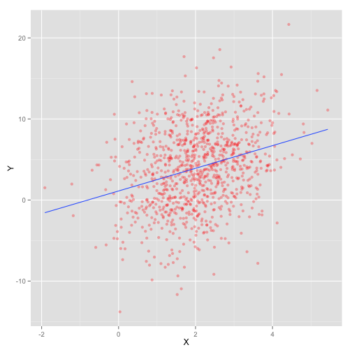

- 畢業於臺大經濟研究所。
- 當研究助理期間，因研究需求，一頭兒栽進 R 的世界。
- DSP 2015 R Tutorial 講者群之一。
- 現在是業餘程式愛好者，喜歡把看過的理論模型用程式實現。
- 時常出沒於 ML/DM Monday 等技術社群。
Review - Data Science Model
智庫驅動
廖尹禎 (Dboy Liao)
qmalliao@gmail.com
About Me
Model
- 如何建一個 model?
Model
- 如何建一個 model?
- 量化問題、提出假設。
- 觀察資料。
- 實作。
Model
OK...所以怎樣才是個"好" Model?
Linear Model
\[ Y = X \beta + \varepsilon, \varepsilon \sim N(0, \sigma^2I) \]
\[ \begin{aligned} y_i &= \beta_0 + \beta_1 x_{i,1} + \cdots + \beta_n x_{i,n} + \varepsilon_i \\ i &= 1, \dots, m \\ \varepsilon_i &\sim N(0, \sigma^2) \\ \end{aligned} \]
Linear Model
\[ Y = X \beta + \varepsilon, \varepsilon \sim N(0, \sigma^2I) \]
- \(Y\): 被解釋變數。也就是我們的研究對象。
Linear Model
\[ Y = X \beta + \varepsilon, \varepsilon \sim N(0, \sigma^2I) \]
- \(Y\): 被解釋變數。也就是我們的研究對象。
- \(X\): 解釋變數。也就是我們認為會"影響" \(Y\) 的變量。
Linear Model
\[ Y = X \beta + \varepsilon, \varepsilon \sim N(0, \sigma^2 I) \]
- \(Y\): 被解釋變數。也就是我們的研究對象。
- \(X\): 解釋變數。也就是我們認為會"影響" \(Y\) 的變量。
- 什麼樣的"影響"呢? 這個模型跟資料的關係又是...?
- 我們做了什麼假設?
Linear Model - Explained
- 對線性模型左右同取期望值: \[ E[Y|X] = X\beta \]
Linear Model - Explained
- 對線性模型左右同取期望值: \[ E[Y|X] = X\beta \]
- \(\varepsilon\) 消失了。(因為我們"假設"其期望值為 0)
Linear Model - Explained
- 對線性模型左右同取期望值: \[ E[Y|X] = X\beta \]
- \(\varepsilon\) 消失了。(因為我們"假設"其期望值為 0)
- \(Y\) 的"期望值" (平均值) 與 \(X\) 呈現線性關係 (\(\beta\))。
Linear Model - Explained
- 使用線性模型時，我們希望:
- \(Y\) 的平均值與 \(X\) 呈線性關係
- 誤差的平均值接近 0
圖形
- 數學講完了，那在資料中，又是呈現什麼樣子呢?
圖形
- 數學講完了，那在資料中，又是呈現什麼樣子呢?
- 我們來看一些例子。
圖形
- \(\varepsilon \sim N(0, 1^2)\)
# 產生資料
X <- matrix(rnorm(1000, 2), 1000, 1)
beta_true <- matrix(c(0.73, 1.6), 2, 1)
Y <- cbind(rep(1, 1000), X) %*% beta_true + rnorm(1000)
data_ok <- data.frame(Y = Y, X = X)
# 畫圖
ggplot(data_ok, aes(x = X, y = Y)) + geom_point(colour="red", alpha = .3)

圖形
- \(\varepsilon \sim N(0, 3^2)\)
# 產生資料
X <- matrix(rnorm(1000, 2), 1000, 1)
beta_true <- matrix(c(0.73, 1.6), 2, 1)
Y <- cbind(rep(1, 1000), X) %*% beta_true + rnorm(1000, sd = 3)
data <- data.frame(Y = Y, X = X)
# 畫圖
ggplot(data, aes(x = X, y = Y)) + geom_point(colour="red", alpha = .3)

圖形
- \(\varepsilon \sim N(0, 5^2)\)
# 產生資料
X <- matrix(rnorm(1000, 2), 1000, 1)
beta_true <- matrix(c(0.73, 1.6), 2, 1)
Y <- cbind(rep(1, 1000), X) %*% beta_true + rnorm(1000, sd = 5)
data_noisy <- data.frame(Y = Y, X = X)
# 畫圖
ggplot(data_noisy, aes(x = X, y = Y)) + geom_point(colour="red", alpha = .3)

Noise 對模型的影響
summary(fit_ok)
##
## Call:
## lm(formula = Y ~ X, data = data_ok)
##
## Residuals:
## Min 1Q Median 3Q Max
## -3.496 -0.646 -0.010 0.679 3.358
##
## Coefficients:
## Estimate Std. Error t value Pr(>|t|)
## (Intercept) 0.7574 0.0685 11.1 <2e-16 ***
## X 1.5904 0.0306 52.0 <2e-16 ***
## ---
## Signif. codes: 0 '***' 0.001 '**' 0.01 '*' 0.05 '.' 0.1 ' ' 1
##
## Residual standard error: 0.98 on 998 degrees of freedom
## Multiple R-squared: 0.73, Adjusted R-squared: 0.73
## F-statistic: 2.7e+03 on 1 and 998 DF, p-value: <2e-16
Noise 對模型的影響
summary(fit_noisy)
## Warning: internal error -3 in R_decompress1
## Error: lazy-load database
## '/Users/DboyLiao/Documents/R_scripts/DSP/A2/A2_Review/.cache/unnamed-chunk-9_d7ac3b4bf8fcd8de15c6fd6ec0371fb0.rdb'
## is corrupt
Linear Model - Dummy Variable
- \(X\) 如果是類別變數呢? 跟 \(Y\) 的關係又是如何?
Linear Model - Dummy Variable
- \(X\) 如果是類別變數呢? 跟 \(Y\) 的關係又是如何?
- 統計學上使用
dummy variable來處理這樣的變數。
Linear Model - Dummy Variable
- \(X\) 如果是類別變數呢? 跟 \(Y\) 的關係又是如何?
- 統計學上使用
dummy variable來處理這樣的變數。 dummy variable是值為0或1的隨機變數。
Dummy Variable -- Explained
- 如果 \(X\) 是
dummy variable，對我們的 linear model 有什麼樣的影響呢?
Dummy Variable -- Explained
- 如果 \(X\) 是
dummy variable，對我們的 linear model 有什麼樣的影響呢? - 給定:
\[ y_i = \beta_0 + \beta_1 x_{i,1} + \varepsilon \]
Dummy Variable -- Explained
- 取期望值:
\[ E[y_i | x_{i, 1}] = \beta_0 + \beta_1 x_{i,1} \]
Dummy Variable -- Explained
- 當 \(x_{i, 1}=0\):
\[ E[y_i|x_{i, 1}=0] = \beta_0 \]
Dummy Variable -- Explained
- 當 \(x_{i, 1}=1\):
\[ E[y_i | x_{i, 1}=1] = \beta_0 + \beta_1 \]
Dummy Variable -- Explained
- \(y_i\) 在 \(x_{i, 1}\) 是
1或0時，期望值會有 \(\beta_1\) 的差距。
Dummy Variable -- Explained
- \(y_i\) 在 \(x_{i, 1}\) 是
1或0時，期望值會有 \(\beta_1\) 的差距。 - 也就是說，我們應該可以從圖形上發現，不同群體 (\(x_{i, 1}\) 是
0與1) 間 \(y_i\) 的平均值應該要有差異。
Dummy Variable -- Explained
- \(y_i\) 在 \(x_{i, 1}\) 是
1或0時，期望值會有 \(\beta_1\) 的差距。 - 也就是說，我們應該可以從圖形上發現，不同群體 (\(x_{i, 1}\) 是
0與1) 間 \(y_i\) 的平均值應該要有差異。 - 讓我們來看一些例子吧!
圖形
- \(\varepsilon \sim N(0, 1^2)\)
X <- matrix(rbinom(1000, 1, 0.5), 1000, 1)
beta_true <- matrix(c(1.1, 5.8), 2, 1)
Y <- cbind(rep(1, 1000), X) %*% beta_true + rnorm(1000, sd = 1)
data <- data.frame(Y = Y, X = ifelse(X == 1, "P", "N"))
ggplot(data, aes(x = Y, fill = X)) + geom_bar(alpha = .4, binwidth = .5)

圖形
- \(\varepsilon \sim N(0, 3^2)\)
X <- matrix(rbinom(1000, 1, 0.5), 1000, 1)
beta_true <- matrix(c(1.1, 5.8), 2, 1)
Y <- cbind(rep(1, 1000), X) %*% beta_true + rnorm(1000, sd = 3)
data <- data.frame(Y = Y, X = ifelse(X == 1, "P", "N"))
ggplot(data, aes(x = Y, fill = X)) + geom_bar(alpha = .4, binwidth = .5)

圖形
- \(\varepsilon \sim N(0, 5^2)\)
X <- matrix(rbinom(1000, 1, 0.5), 1000, 1)
beta_true <- matrix(c(1.1, 5.8), 2, 1)
Y <- cbind(rep(1, 1000), X) %*% beta_true + rnorm(1000, sd = 5)
data <- data.frame(Y = Y, X = ifelse(X == 1, "P", "N"))
ggplot(data, aes(x = Y, fill = X)) + geom_bar(alpha = .4, binwidth = .5)

觀察資料
- 根據剛剛的數學分析與例子，我們可以歸納出以下幾個觀查資料的重點:
觀察資料
- 根據剛剛的數學分析與例子，我們可以歸納出以下幾個觀查資料的重點:
- \(X\) 與 \(Y\) 是否呈線性? (\(X\) 是數值變數)
- \(Y\) 的平均值在不同 \(X\) 下是否有差異? (\(X\) 是類別變數)
- 高次項的影響? (\(Y\) 與 \(X\) 不是單純線性關係)
- 圖形可能受誤差項的標準差影響，需透過模型驗證。
補充: 變數選取小撇步
- \(X\) v.s \(2X\) (共線性問題)
- 變數獨立性 (等等看圖說明)
補充: 變數選取小撇步
- 譬如說，我們想知道年齡與身高的關係。
- \(X_1\) 是身高(公分)
- \(X_2\) 是身高(公尺)
- 把 \(X_1\) 與 \(X_2\) 同時放進 Linear Model 裡會有什麼效果呢?
補充: 變數選取小撇步
\[ \begin{aligned} y_i =& \beta_0 + \beta_1 x_{1, i} + \beta_2 x_{2, i} \\ =& \beta_0 + \beta_1 100 x_{2, i} + \beta_2 x_{2, i} \\ =& \beta_0 + (100\beta_1 + \beta_2)x_{2, i} \\ \end{aligned} \]
補充: 變數選取小撇步
- 有放 \(X_1\) 跟沒放一樣。
- 會造成運算結果的錯誤。
- 因為 covariance matrix 不是 full-ranked (給懂線性代數的朋友)
- 百害而無一利。
- 避免放入有強烈線性關係的變數!
實作
- 用
read.table讀進 data
sales_data <- read.table("demo_data.csv", sep=',')
實作
- 看一下讀進來的結果
head(sales_data)
## V1 V2 V3 V4 V5 V6 V7 V8
## 1 Store Date Time Dept Family Item_No SalesQty Price
## 2 H1 01/01/2009 09 GA \xb9B\xb0ʶ\xbc\xae\xc6 254 3 24
## 3 H1 01/01/2009 09 GA \xb9B\xb0ʶ\xbc\xae\xc6 654 3 19
## 4 H1 01/01/2009 09 GA \xb9B\xb0ʶ\xbc\xae\xc6 876 5 14
## 5 H1 01/01/2009 10 GA \xb9B\xb0ʶ\xbc\xae\xc6 186 5 9
## 6 H1 01/01/2009 11 GA \xb9B\xb0ʶ\xbc\xae\xc6 876 5 14
## V9 V10 V11
## 1 SalesValue Sales_Status Sales_number
## 2 72 N 1
## 3 57 P 1
## 4 70 P 1
## 5 45 P 1
## 6 70 P 1
實作
- 編碼出問題了。
- 簡單的方法可以用
read.table中的fileEncoding參數解決。
sales_data <- read.table("demo_data.csv", sep = ',', fileEncoding = 'big5',
header = T, stringsAsFactors = F)
head(sales_data)
## Store Date Time Dept Family Item_No SalesQty Price SalesValue
## 1 H1 01/01/2009 9 GA 運動飲料 254 3 24 72
## 2 H1 01/01/2009 9 GA 運動飲料 654 3 19 57
## 3 H1 01/01/2009 9 GA 運動飲料 876 5 14 70
## 4 H1 01/01/2009 10 GA 運動飲料 186 5 9 45
## 5 H1 01/01/2009 11 GA 運動飲料 876 5 14 70
## 6 H1 01/01/2009 12 GA 運動飲料 654 1 29 29
## Sales_Status Sales_number
## 1 N 1
## 2 P 1
## 3 P 1
## 4 P 1
## 5 P 1
## 6 P 1
實作
用 Unix/Linux 的人有福了:
- 用
iconv處理編碼。(big5 --> utf8)
system("iconv -f big5 -t utf8 demo_data.csv > demo_data_utf8.csv")
實作
- 用 Windows 的就....拜託用 Unix/Linux 的人幫忙一下吧。
- 或者你可以參考這邊的資料來安裝 Windows 版的
iconv。
實作
- 再重新讀一次
sales_data <- read.table("demo_data_utf8.csv", sep = ",", header=T, stringsAsFactors = F)
head(sales_data)
## Store Date Time Dept Family Item_No SalesQty Price SalesValue
## 1 H1 01/01/2009 9 GA 運動飲料 254 3 24 72
## 2 H1 01/01/2009 9 GA 運動飲料 654 3 19 57
## 3 H1 01/01/2009 9 GA 運動飲料 876 5 14 70
## 4 H1 01/01/2009 10 GA 運動飲料 186 5 9 45
## 5 H1 01/01/2009 11 GA 運動飲料 876 5 14 70
## 6 H1 01/01/2009 12 GA 運動飲料 654 1 29 29
## Sales_Status Sales_number
## 1 N 1
## 2 P 1
## 3 P 1
## 4 P 1
## 5 P 1
## 6 P 1
資料整理/視覺化套件
- dplyr (
pipe) - ggplot2
- GGally (
ggpairs) - demo.R